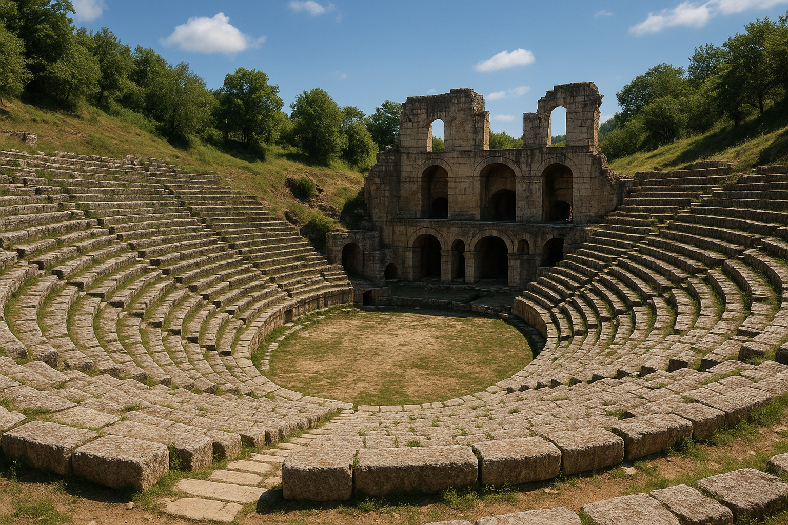

Düzce'nin Tarihi
Düzce, tarih boyunca birçok medeniyete ev sahipliği yapmıştır. Antik dönemde "Prusias ad Hypium" adıyla bilinen bu bölge, Roma ve Bizans dönemlerinde önemli bir yerleşim merkezi olmuştur. Osmanlı döneminde de önemli bir konaklama ve ticaret noktası olma özelliğini sürdürmüştür.
1999 yılında yaşanan iki büyük deprem sonrasında, 1999 yılında Türkiye'nin 81. ili olarak il statüsüne kavuşmuştur. Bu gelişme, Düzce'nin idari olarak da öne çıkmasını sağlamıştır.
Düzce'nin Geçmişinden Kareler

12 Kasım 1999 Düzce Depremi

Konuralp Antik Tiyatrosu